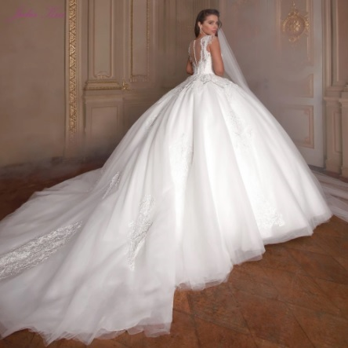

¿Qué hacemos?
Como todo el mundo sabe el día de la boda es el día más esparado para las novias, tanto por el trabajo que lleva como como la ilusión que recae en que ese es tu día, el día tan esparado donde todos los ojos te estaran mirando con el minimo de detalle, donde tú eres la princesa de tu cuento de hadas y debes deslumbrar a los invitados. Por eso estamos aqui para que todas podamos ser la princesa de tus sueños con nuestros fabulosos vestidos.
Imagen de novia
haz click en la imagen para cargarla.
Tipos de vestidos
- De princesa
- De sirena
- De corte en línea A
- De corte recto
- De corte cola de pato
Te recomendamos que visualices este video para ayudarte a elegir tu vestido conforme a la forma de tu cuerpo:
Para ver en imagen los estilos puedes ir a los enlaces y clickar sobre el de los estilos de corte de los vestidos
Tallas de vestidos
Algo que debemos tener en cuenta a la hora de encargar nuestro vestido es nuestra talla, debemos saber que talla nos encaja ya que esta producción se hace a medida con nuestro cuerpo, nunca debemos encarga un vestido más pequeño, siempre deberemos coger nuestro vestido con nuestra talla y si en alguna parta de tu cuerpo nos viene un poco grande siempre podemos llevarlo a un modista para que realicen unos arreglos a medida.
| Talla | Tamaño en cm | |||
|---|---|---|---|---|
| Pecho | Cintura | Cadera | Dobladillo | |
| 2 | 83 | 65 | 91 | 147 |
| 4 | 84 | 68 | 92 | 147 |
| 6 | 88 | 70 | 96 | 150 |
| 8 | 90 | 72 | 98 | 150 |
| 10 | 93 | 75 | 101 | 152 |
| 12 | 97 | 79 | 105 | 152 |
| 14 | 100 | 83 | 109 | 155 |
| 14 W | 104 | 86 | 110 | 155 |
| 16 | 104 | 86 | 112 | 155 |
| 16 W | 109 | 92 | 116 | 155 |
| 20 W | 114 | 98 | 121 | 155 |
| 24 W | 119 | 104 | 126 | 155 |
| 28 W | 124 | 109 | 131 | 155 |
Para hacer pedido personalizado y que contactemos con usted rellene el siguiente formulario
Haz click aquí para rellenar el formulario de contacto
Enlaces a listado de colores, telas, estilos y más info
- Si quieres más información para diferenciar los colores pulsa aquí
- Si quieres info sobre las telas utilizadas en la confección de vestidos click aquí
- Si deseas información visual sobre los estilos de corte de vestidos haz click aquí